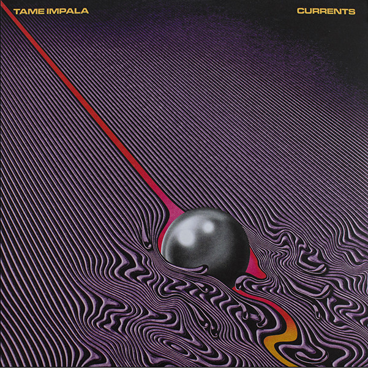
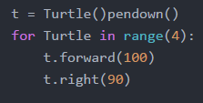
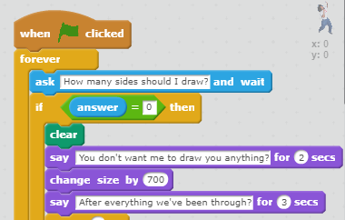
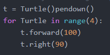
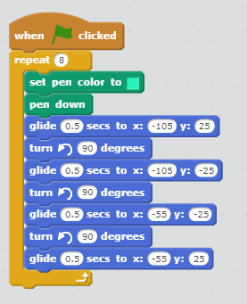
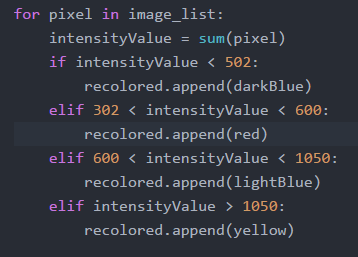
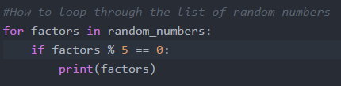
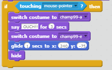

Me
by Anna Francis
About me
My name is Anna Francis. To briefly introduce myself to you, I enjoy listening to indie, funk rock, and art rock music, but dislike listening to classical and country music. I've played clarinet for two years in my middle school concert band as well as jazz band for a year. In highschool, I switched to the tenor saxophone and played in one of the jazz bands called "Out of the Box." As much as I enjoy listening and playing music, I also enjoy woodworking. Last year, I built a pintograph and a ukulele in my school's woods shop. I am very excited to have enrolled in the Girls Who Code program and look forward to the rest of the summer. Besides learning a bit of Processing before and coding my pintograph on Desmos, I have little experience with coding. So far, I enjoy it very much.
My Passions
Music
Photography
Math
February 15, 2001
Family members
Connecticut
A Little About Me
- Top Favorite Books
- "Memoirs of an Imaginary Friend," Matthew Dicks
- "Elsewhere," Gabrielle Zevin
- "Othello," Shakespeare
- "A Separate Peace," John Knowles
- "Before I Wake," C.L. Taylor
- "Hungry," H. A. Swain
-
I recommend them!
Seriously, I do!
- Top Favorite Movies
- "A Beautiful Mind," Ron Howard
- "Howl's Moving Castle," Hayao Miyazaki
- "Spirited Away," Miyazaki
- "Edward Scissorhands," Tim Burton
- "Gattaca," Andrew Niccol
- "Ferris Beuller's Day Off," John Hughes
-
Go!
Check them out!
My Favorite Music
- Songs
- "Wish I Knew You," The Revivalists
- "Never is a Long Time," Red Hot Chili Peppers
- "Are You Serious," Andrew Bird
- "Navigate Below" The Revivalists
- "Salad Days,"Max DeMarco
- "What You Know," Two Door Cinema Club
- "Fumes," Eden
- "Holy Ghost," Coin
- ______
- ___
-
I recommend them!
Seriously, I do!
- Song Artists
- The Revivalists
- Red Hot Chili Peppers
- Arctic Monkeys
- Eden
- Cage The Elephant
- ___
- ___
- ___
- ____
-
Go!
Check them out!
Reflections
HTML
To make my website accessible to all users, I organized it in a way that users can easily click interactive features and understand the content through an organized set up. Ideas that other people used on their websites that interested me were moving background gifs, different fonts, and photo collages. I am the most proud of learning how to use Javascript to creature certain features in my website that users can interact with.
I created a Side Scroller game in Scratch. Grab a friend and play below!!
Core 4
Variables
Variables are factors that are used to store information in the python code. In other words, one would use a variable to indicate the amount of something they want to represent. For instance, during the Drawing Shapes project, I used the variable t to represent the Turtle program I incorporated into my code. Instead of writing "turtle.forward" to tell the Turtle creating the shape to move forward, I could simply type "t.forward" instead.
Here is how a variable would appear in Scratch
In real life situations, variables are essential to solving problems or representing information. Take mathematicians, for example. They constantly work with variables to represent pieces of information in equations. One of the many variables they use is variable x, commonly used to represent an unknown ammount.
Loops
Loops repeat a certain code. It allows the code to repeatedly be executed when running.
Here is how a loop would appear in python
Here is how a loop would appear in Scratch
Loops appear everywhere in the real world. A real life scenario would be working at a coffee shop for instant. For every customer, an employee would need to repeat steps in the process of making and serving them coffee.
1. Ask the customer for their drink order. 2. Fill the machine with the ground coffee of their choosing. 3. Measure and pour a certain amount of water through the machine 4. Fill a cup with the coffee 5. Add any extra ingredients of the customer's choosing 6. Serve the coffee 7. Collect their paymentConditionals
Conditions limit and control the performance of specific actions depending on whether or not boolean conditions evaluate them to be true or false.
Here is how a conditional would appear in Python
Here is how a conditional would appear in Scratch
In real life situations, conditions can be used to limit certain amounts. For instance, football coaches have a limited amound of players they can add to their team, so they must use conditions to select the right ones.
Function
A function is a procedure that performs a certain operation. For instance, if you wanted your computer to raise the number 5 to the power of 3, then you would create a function that would multiply 5 by itself 3 times in a row.
Here is how a function would appear in Scratch
This function is essentially controlling the interaction between the Scratch character and the online user. If the user swipers their mouse pointer over the Scratch character, the character will switch costumes, respond by saying the word "OUCH!", switch yet again to another costume, and glide to the corner of the screen before disappearing.
In real life example of a function would be controlling the direction of a car. If you turn the steering wheel to the left, the front wheels will turn to the left and therefore steer your vehicle towards the left. If you change to a lower set of gears, the speed of your vehicle will lowered, thus allowing you to drive safely down steep hills.
Obamicon
Using lists in Python helps you structure your data in an efficient way. You have the option to pick between the three methods of lists: list.append, list.insert, and list.extend.
- "list.append" adds an element to the end of your list.
- "list.insert" allows you to insert an element at a given index in the list.
- "list.extend" involves two lists and allows you to combine both lists by adding the elements in the first list to the end of the second one.
Every group and partner I worked with worked well with working together to accomplish a task. I favor no particular group. Anyways, here is an image I altered using Obamicon on Python. Check it out below!


Contact Me
Connecticut, US
Email: aeyfrancis@gmail.com
If you have any questions, send me a message below! It's alright if you don't, I'll still talk to you!